Contents
close all;clear;clc;
Main Script
p = phantom(256);
theta = 0:3:177;
h = radon(p, theta);
m = size(h, 1);
L_max = floor(size(h, 1)/2);
L_max2 = floor(L_max/2);
ramlak_1 = myFilter(h, 'ramlak', L_max);
ramlak_2 = myFilter(h, 'ramlak', L_max2);
im1 = 0.5*iradon(ramlak_1, theta, 'linear', 'none');
im2 = 0.5*iradon(ramlak_2, theta, 'linear', 'none');
shepp1 = myFilter(h, 'shepp', L_max);
shepp2 = myFilter(h, 'shepp', L_max2);
im3 = 0.5*iradon(shepp1, theta, 'linear', 'none');
im4 = 0.5*iradon(shepp2, theta, 'linear', 'none');
cos1 = myFilter(h, 'cos', L_max);
cos2 = myFilter(h, 'cos', L_max2);
im5 = 0.5*iradon(cos1, theta, 'linear', 'none');
im6 = 0.5*iradon(cos2, theta, 'linear', 'none');
plot_images(im1, im2, 'Used Ram-Lak filter, w=wmax', 'Used Ram-Lak filter, w=wmax/2');
plot_images(im3, im4, 'Used Shepp-Logan filter, w=wmax', 'Used Shepp-Logan filter, w=wmax/2');
plot_images(im5, im6, 'Used cosine filter, w=wmax', 'Used cosine filter, w=wmax/2');
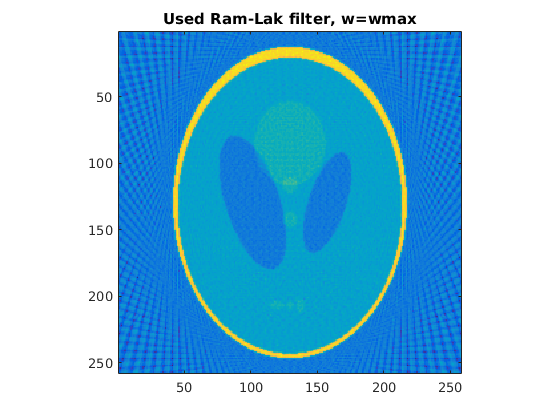 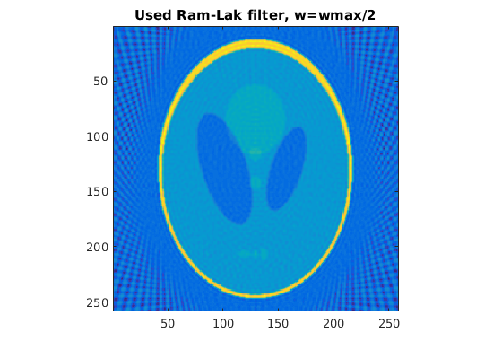 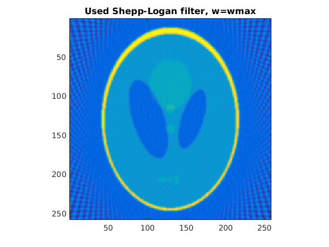 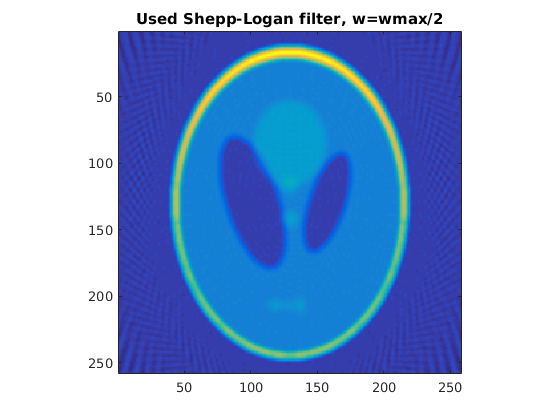 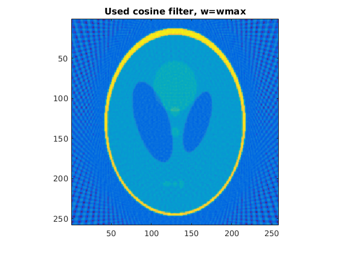 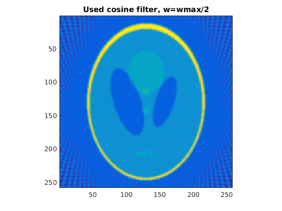
Part B
mask = fspecial('gaussian', 11, 1);
mask5 = fspecial('gaussian', 51, 5);
S0 = p;
S1 = conv2(p, mask, 'same');
S5 = conv2(p, mask5, 'same');
figure;
imagesc(S0);
title('Original image');
figure;
imagesc(S1);
title('Gaussian blurred with sigma = 1, kernel = 11*11');
figure;
imagesc(S5);
title('Gaussian blurred with sigma = 5, kernel = 51*51');
r0 = radon(S0, theta);
r1 = radon(S1, theta);
r5 = radon(S5, theta);
h0 = myFilter(r0, 'ramlak', L_max);
h1 = myFilter(r1, 'ramlak', L_max);
h5 = myFilter(r5, 'ramlak', L_max);
r0 = 0.5*iradon(h0, theta, 'linear', 'none');
r0 = r0(2:257, 2:257);
r1 = 0.5*iradon(h1, theta, 'linear', 'none');
r1 = r1(2:257, 2:257);
r5 = 0.5*iradon(h5, theta, 'linear', 'none');
r5 = r5(2:257, 2:257);
fprintf('The RMSE value for S0 is %f\n', RMSE(r0, S0));
fprintf('The RMSE value for S1 is %f\n', RMSE(r1, S1));
fprintf('The RMSE value for S2 is %f\n', RMSE(r5, S5));
plot_rmse(S0, L_max, theta, 'RRMSE for S0');
plot_rmse(S1, L_max, theta, 'RRMSE for S1');
plot_rmse(S5, L_max, theta, 'RRMSE for S5');
The RMSE value for S0 is 0.818452
The RMSE value for S1 is 0.526669
The RMSE value for S2 is 0.066239
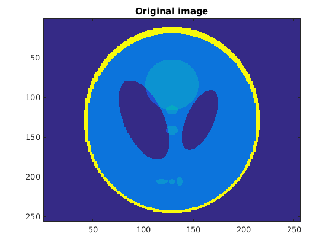 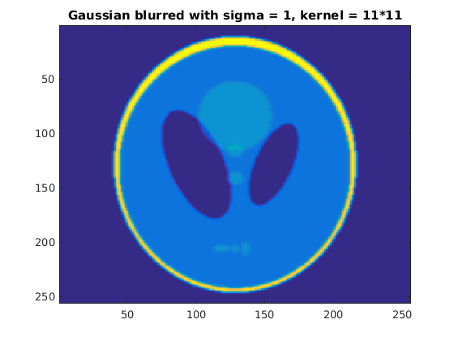 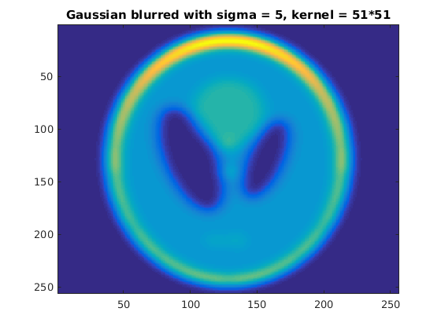 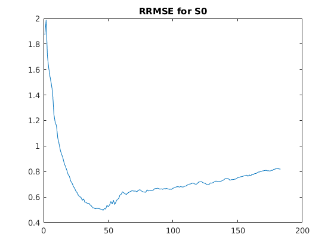 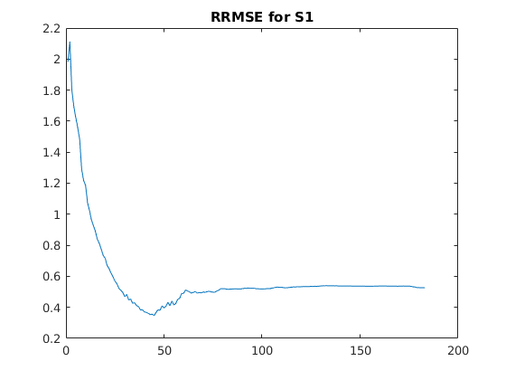 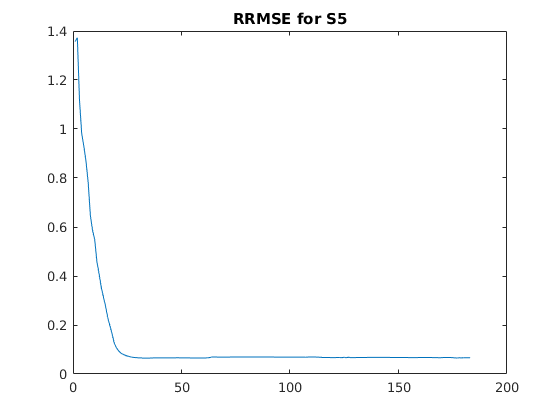
Justifications
(a) We see that cosine filter blurs the image by a big factor as
compared to Ram-Lak and Shepp-Logan because the cos(..) term descends to
0 as the value goes upto L. Shepp-Logan has the sinc function
multiplied, which also dampens the higher frequencies. Hence, from a
smoothness perspective, Cosine > SheppLogan > RamLak for the same value
of parameter. For the same method, but with different parameters, we see
that the edges are more prominent in the w = wmax case because we
preserve more high frequency components.
(b) We see that the RRMSE value is the minimum for the most blurred
image (I had to normalize the images to bring them to the same range).
Since backprojection has the property of blurring the true image, it
deviates more from a sharp image, and for a blurred image, the high
frequency component is already low, hence the filter doesn't do much, and
the resulting backprojection is close to the true image. This is the
reason which the RRMSE decrease as the blurring factor increases.
(c) For every image, initially, all the frequencies are attentuated,
leaving nothing in the fourier domain to invert from. As we increase L,
we gain more and more frequencies, and when we make L too high, then the
noisy components start to creeep into the fourier domain. In the case of
the blurred image, the high frequency components are already attenuated,
hence the RRMSE doesn't go up, but rather stays constant. In the first
two cases, the RRMSE goes a bit high because the high componenets start
appearing, which deviate from the blurry backprojection.